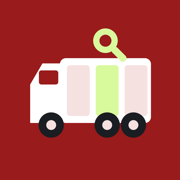
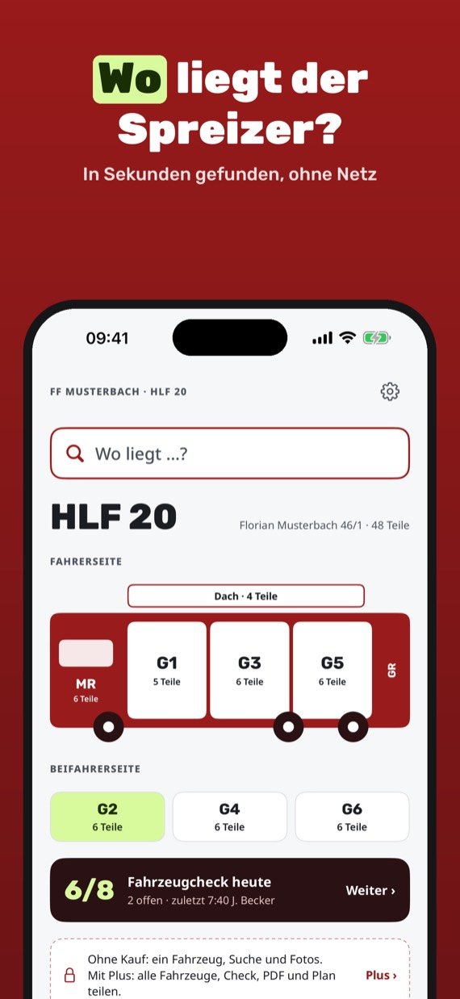
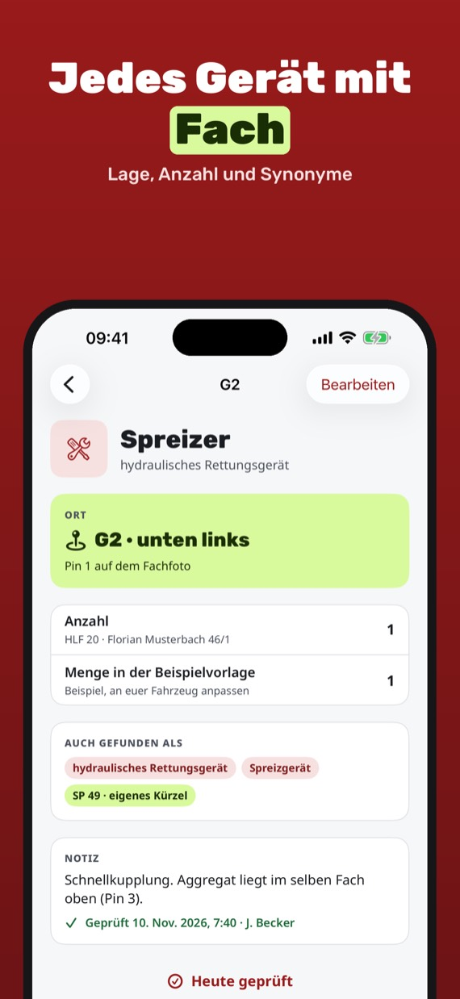
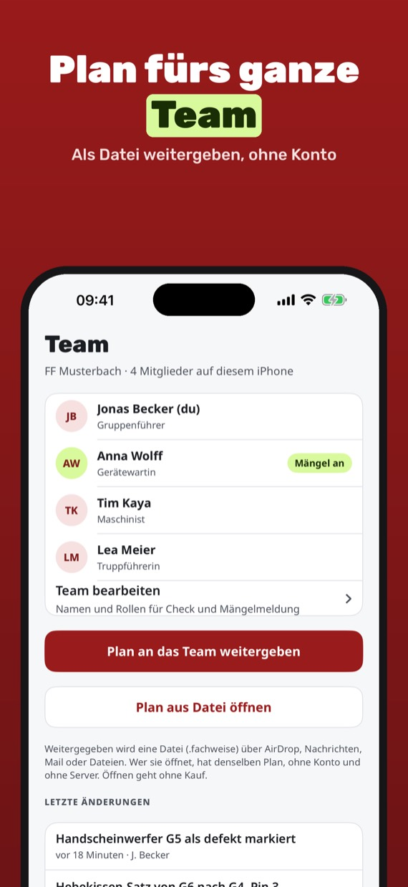
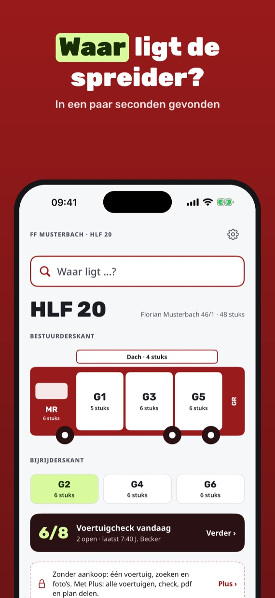
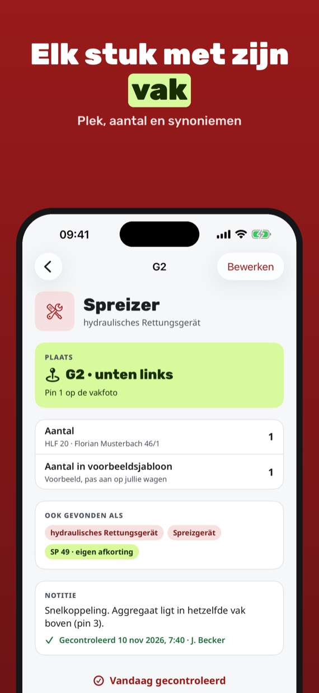
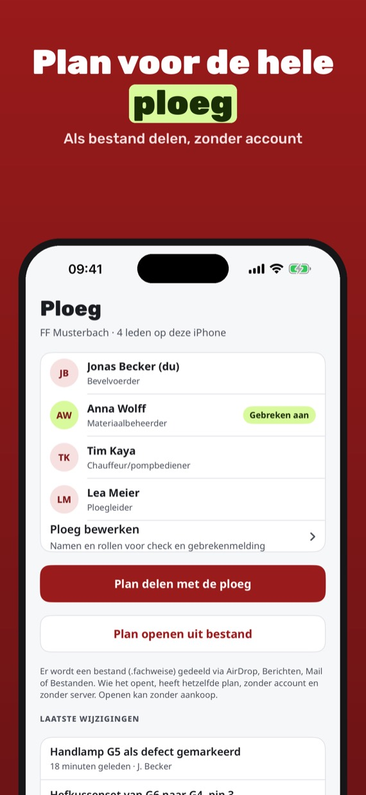
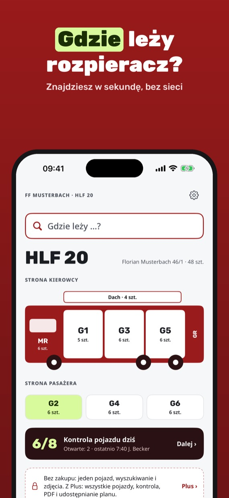
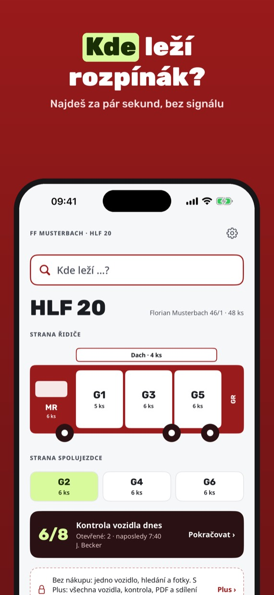

Fachweise
Wo liegt was im Fahrzeug?
Fachweise – Beladeplan
Wo liegt was im Fahrzeug?
Euer Fahrzeug, euer Beladeplan: Geräteräume, Fotos mit Nummern und Suche mit Synonymen. Wo liegt der Spreizer? In Sekunden gefunden, auch ohne Netz.



Fachweise ist der Beladeplan für eure Wache. Legt jedes Fahrzeug einmal an, aus unserer eigenen Beispielvorlage als Startpunkt oder leer, und tragt ein, was wirklich wo liegt. Fotografiert die Geräteräume, setzt nummerierte Pins auf die Geräte und findet alles über Name, Synonym oder Abkürzung: „HRG“ zeigt Spreizer und Schneidgerät mit Fach und Lage. Dazu kommen der tägliche Fahrzeugcheck, die Mängelmeldung als PDF und der Plan als Datei für alle im Team.
- Fahrzeug aus Beispielvorlage oder leer anlegen: HLF, LF, TLF, RTW, KTW
- Geräteräume G1 bis G6, Heck, Mannschaftsraum und Dach im Überblick
- Suche mit Synonymen und Abkürzungen über alle Fahrzeuge, auch per Siri
- Fotos der Fächer mit nummerierten Pins für jedes Gerät
- Texterkennung liest Fachnummern wie G3 direkt auf dem iPhone
- Täglicher Fahrzeugcheck mit eigenen Punkten und Mängelmeldung als PDF
- Plan als Datei per AirDrop, Nachrichten oder Mail weitergeben, Beladeplan als PDF zum Drucken
- Eigenes Abkürzungsverzeichnis mit über 160 Begriffen plus euren Kürzeln, alles ohne Netz
Ein Fahrzeug mit allen Fächern, Fotos und Pins, die Vorlagen und die Suche gehen immer ohne Kauf. Pläne, die euch das Team schickt, öffnet ihr ebenfalls ohne Kauf. Fachweise Plus ist ein Einmalkauf: unbegrenzt viele Fahrzeuge, täglicher Check, Mängelmeldung als PDF und Plan weitergeben. Kein Abo, keine Werbung, kein Konto, kein Server.
Die Vorlagen sind unsere eigene, allgemeine Beispielliste, keine Normbeladung: Passt Geräte, Anzahlen und Lagen an euer Fahrzeug an. Fachweise ist eine unabhängige App und steht in keiner Verbindung zu Feuerwehren, Verbänden, Normungsstellen oder Fahrzeugherstellern. Maßgeblich sind euer Fahrzeug und eure Dienstvorschriften.
Bald im App Store.
Fachweise – bepakkingsplan
Waar ligt wat in de wagen?
Jullie wagen, jullie bepakking: vakken, foto’s met nummers en zoeken op synoniemen. Waar ligt de spreider? In een paar seconden gevonden, ook zonder internet.



Fachweise is het bepakkingsplan voor jullie post. Richt elke wagen één keer in: vakken, materiaal, aantallen en de plek in het vak. Fotografeer de vakken, zet genummerde pins op het materiaal en vind alles via naam, synoniem of afkorting. Daarbij de dagelijkse voertuigcontrole, een gebrekenmelding als pdf en het plan als bestand voor de hele ploeg. In versie 1.0 richt je in Nederland een lege wagen zelf in; Nederlandse sjablonen volgen.
- Lege wagen inrichten met eigen vakken en materiaal
- Alle vakken, cabine en dak in één overzicht
- Zoeken op synoniemen en afkortingen in alle wagens, ook via Siri
- Foto’s van de vakken met genummerde pins
- Tekstherkenning leest vaknummers direct op de iPhone
- Dagelijkse voertuigcontrole met eigen punten en gebrekenmelding als pdf
- Plan als bestand delen via AirDrop, Berichten of mail, bepakkingsplan als pdf om te printen
- Werkt zonder internet, geen account, geen server
Eén wagen met alle vakken, foto’s en pins en het zoeken werken altijd zonder aankoop. Een plan dat de ploeg je stuurt, open je ook zonder aankoop. Fachweise Plus is een eenmalige aankoop: onbeperkt wagens, dagelijkse controle, gebrekenmelding als pdf en plan delen. Geen abonnement, geen reclame.
Fachweise is een onafhankelijke app zonder band met brandweerkorpsen, veiligheidsregio’s, verenigingen of fabrikanten. Wat telt, is jullie eigen wagen en jullie eigen voorschriften.
Binnenkort in de App Store.
Fachweise – sprzęt w skrytkach
Gdzie co leży w pojeździe?
Twój wóz, twoje rozmieszczenie sprzętu: skrytki, zdjęcia z numerami i wyszukiwanie po synonimach. Gdzie leży rozpieracz? Znajdziesz w sekundę, także bez sieci.

Fachweise to plan rozmieszczenia sprzętu dla twojej jednostki. Każdy pojazd zakładasz raz: skrytki, sprzęt, liczby i miejsce na półce. Fotografujesz skrytki, stawiasz numerowane pinezki na sprzęcie i znajdujesz wszystko po nazwie, synonimie lub skrócie. Do tego codzienna kontrola pojazdu, zgłoszenie usterki w PDF i plan jako plik dla całego zastępu. W wersji 1.0 w Polsce zakładasz pusty pojazd i urządzasz go sam; polskie szablony pojawią się później.
- Pusty pojazd z własnymi skrytkami i sprzętem
- Wszystkie skrytki, kabina i dach w jednym widoku
- Wyszukiwanie po synonimach i skrótach we wszystkich pojazdach, także przez Siri
- Zdjęcia skrytek z numerowanymi pinezkami
- Rozpoznawanie tekstu odczytuje numery skrytek prosto na iPhonie
- Codzienna kontrola pojazdu z własnymi punktami i zgłoszenie usterki w PDF
- Plan jako plik przez AirDrop, Wiadomości lub e-mail, plan rozmieszczenia w PDF do druku
- Działa bez internetu, bez konta i bez serwera
Jeden pojazd ze wszystkimi skrytkami, zdjęciami i pinezkami oraz wyszukiwanie działają zawsze bez zakupu. Plan przesłany przez zespół też otworzysz bez zakupu. Fachweise Plus to jednorazowy zakup: dowolnie wiele pojazdów, codzienna kontrola, zgłoszenie usterki w PDF i przekazywanie planu. Bez subskrypcji i reklam.
Fachweise to niezależna aplikacja, niezwiązana z jednostkami straży, urzędami, związkami ani producentami pojazdów. Wiążący jest twój pojazd i twoje przepisy.
Wkrótce w App Store.
Fachweise – vybavení vozidla
Kde co leží v autě?
Tvoje auto, tvoje rozmístění vybavení: skříně, fotky s čísly a hledání podle synonym. Kde leží rozpínák? Najdeš za pár sekund, i bez signálu.

Fachweise je plán uložení vybavení pro tvou jednotku. Každé vozidlo založíš jednou: skříně, vybavení, počty a místo v polici. Vyfotíš skříně, umístíš číslované špendlíky na vybavení a najdeš všechno podle názvu, synonyma nebo zkratky. K tomu denní kontrola vozidla, hlášení závady v PDF a plán jako soubor pro celou jednotku. Ve verzi 1.0 v Česku zakládáš prázdné vozidlo a uspořádáš ho sám; české šablony přijdou později.
- Prázdné vozidlo s vlastními skříněmi a vybavením
- Všechny skříně, kabina a střecha v jednom přehledu
- Hledání podle synonym a zkratek ve všech vozidlech, i přes Siri
- Fotky skříní s číslovanými špendlíky
- Rozpoznávání textu přečte čísla skříní přímo v iPhonu
- Denní kontrola vozidla s vlastními body a hlášení závady v PDF
- Plán jako soubor přes AirDrop, Zprávy nebo e-mail, plán uložení v PDF k tisku
- Funguje bez internetu, bez účtu a bez serveru
Jedno vozidlo se všemi skříněmi, fotkami a špendlíky a hledání fungují vždy bez nákupu. Plán, který ti pošle jednotka, otevřeš také bez nákupu. Fachweise Plus je jednorázový nákup: libovolně mnoho vozidel, denní kontrola, hlášení závady v PDF a předávání plánu. Bez předplatného a bez reklam.
Fachweise je nezávislá aplikace bez vazby na jednotky, úřady, svazy nebo výrobce vozidel. Závazné je tvoje vozidlo a tvoje předpisy.
Brzy v App Store.
© 2026 Mustafa Utku Bayık